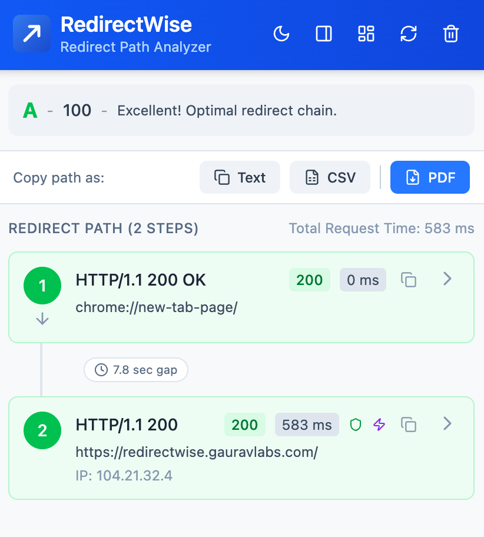

Track redirects & catch hidden ad links with a persistent history dashboard. Real-time redirect checker with popup & sidepanel. Trace every hop including 301, 302, JavaScript, Meta Refresh, and HSTS redirects.

Everything you need to analyze, debug, and optimize HTTP redirect chains for better performance.
Automatically capture every hop within a redirect chain including 301, 302, 303, 307, 308, JavaScript redirects, Meta Refreshes, and HSTS.
Native support for English, Hindi, Spanish, Arabic, Portuguese, Dutch, Polish, Vietnamese, Swedish, Indonesian, and more!
Unlike standard extensions that lose data on page reload, RedirectWise securely logs up to 2,000 URLs in a persistent dashboard.
Get instant A-F grades for every redirect chain. Discover slow redirects affecting Core Web Vitals and penalize infinite loop architecture.
Audit strict cache-control protocols, server outputs, and custom HTTP headers perfectly tailored for technical audits.
Run your redirect path checker natively via the popup or permanently pin the dashboard sidepanel for continuous real-time website monitoring.
Trace exact delay gaps between redirect hops to audit tracking link latency and optimize redirect performance.
Download professional redirect path reports with logos and categorized headers, fully optimized for Manifest V3.
Operates fully offline. No analytics, no cloud storage, and zero data leaving your browser.
Get started in seconds with our simple three-step process.
Add RedirectWise to your browser from the Chrome Web Store or Edge Add-ons.
Navigate to any URL and RedirectWise automatically captures all redirects in the background.
Click the extension icon to view the redirect chain, health score, and export reports.
Whether you're a developer, web specialist, or marketer, RedirectWise has you covered.
Analyze redirect chains for optimization
Find and fix redirect loops quickly
Monitor affiliate redirect paths
Track marketing URL redirects
Common questions about URL redirection and audits.
RedirectWise is the ultimate URL Redirect Checker and Redirect Chain Analyzer. Instantly trace HTTP redirects, perform deep audits, and map out 301, 302, 307, 308, JavaScript redirects, Meta Refreshes, and HSTS paths in real-time.
RedirectWise now supports 18 languages including English, Hindi, Spanish, Arabic, Portuguese, Dutch, Polish, Vietnamese, Swedish, Indonesian, and more!
Unlike basic tools that wipe history when a page reloads, RedirectWise features a Persistent History Dashboard. It securely logs up to 2,000 URLs. Even if an ad forcefully redirects you or a page refreshes, the full redirect chain remains safely recorded.
Long redirect chains can increase page load times, waste bandwidth, and unnecessarily consume crawl budget. RedirectWise helps identify and fix these issues with instant A-F health grades.
Yes! RedirectWise is available as a completely free browser extension for both Google Chrome and Microsoft Edge. It's also Manifest V3 compliant.
Latest updates and improvements
Download RedirectWise for free and start analyzing your redirect chains today.